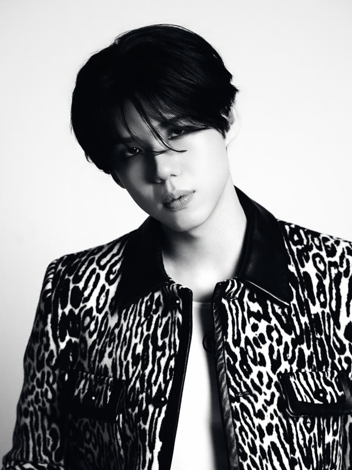
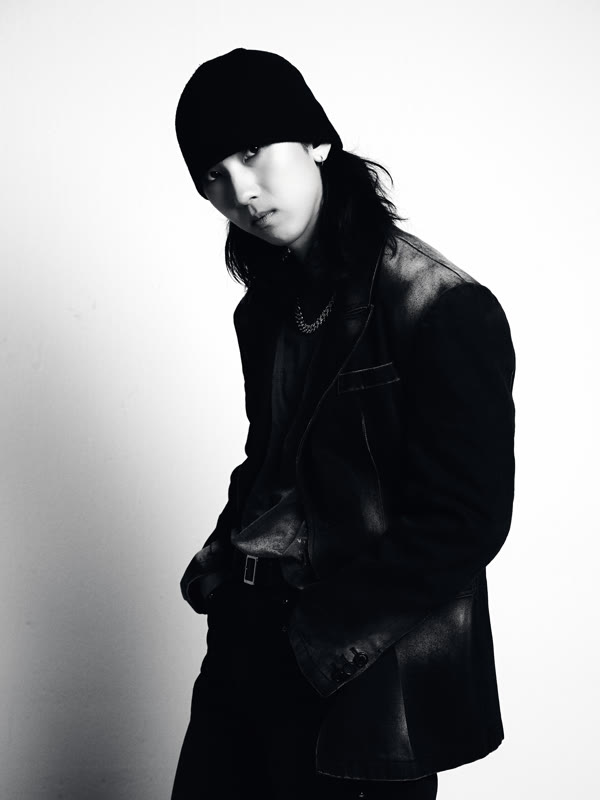
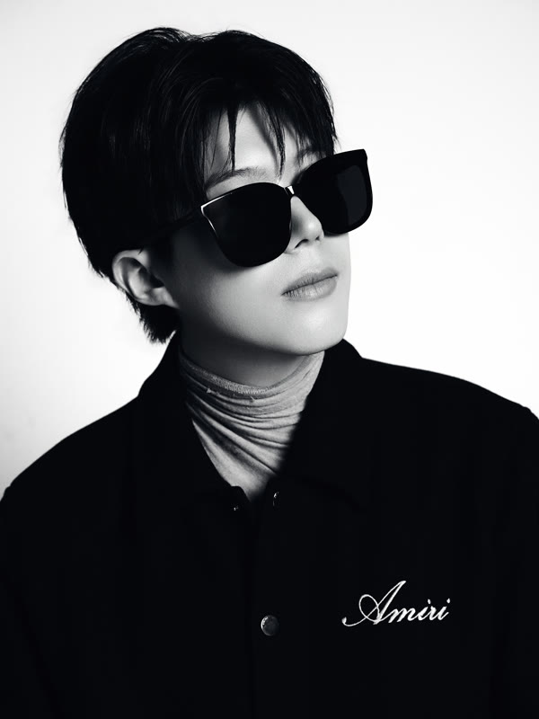
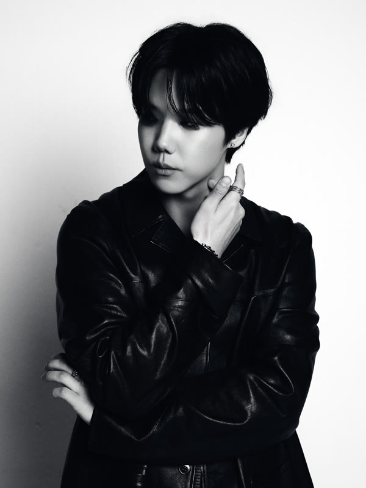
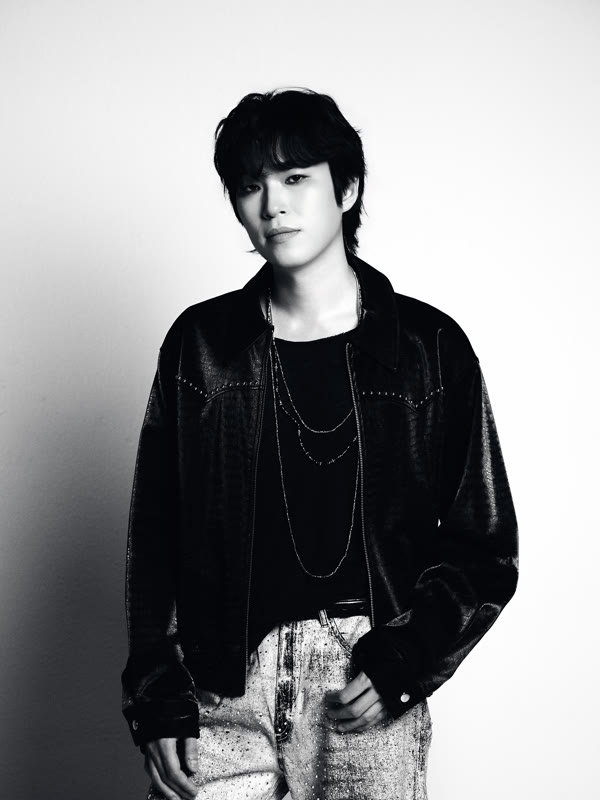

GAHO
가호 · 솔로
PLAN-G.IO
사람과 음악이 만나는 곳.
PLAN-G Entertainment는 진정성 있는 아티스트를 발굴하고 그들의 잠재력을 극대화하는 뮤직 레이블입니다.
우리는 독창적인 예술성과 혁신적인 사운드가 가진 힘을 믿습니다. 아티스트와 팬 사이의 깊이 있는 유대감을 형성하고, 음악 본연의 진정성을 지키며 새로운 가능성을 열어갑니다.
음악 제작부터 글로벌 유통에 이르기까지, PLAN-G는 아티스트의 창작 여정 전반을 함께하며 그들의 목소리가 전 세계로 뻗어나갈 수 있도록 든든한 파트너가 되겠습니다.
01
신곡 발매 — 2026.08.12
KAVE — New Single
Out 12 August 2026.
KAVE의 신곡 <FLOWERBURN>이 2026년 8월 12일 발매됩니다. 지금 티저 영상을 먼저 만나보세요.
2024년 결성 이후 록과 EDM, 얼터너티브를 오가며 자신들의 소리를 넓혀 온 KAVE가 내놓는 새로운 한 곡입니다.
02
가호 · 솔로

Members
(05)
01가호

02지상

03현

04오너

05준
GAHO
& KAVE
UNTOLD STORIES
03
04 — Europe Tour 2026
내 위치에서 가까운 공연부터 정렬합니다. 위치 정보는 브라우저를 벗어나지 않습니다.
Polymanga · Switzerland
↗Hybrydy · Poland
↗Columbia Theater · Germany
↗CBE · Germany
↗Café de la Danse · France
↗P60 · Netherlands
↗The Underworld · United Kingdom
↗05
CITYSCAPES — NEW HORIZONS / EUROPE 2026
06
[ 설명 1~2문장 ]
[ 설명 1~2문장 ]
[ 설명 1~2문장 ]
[ 설명 1~2문장 ]